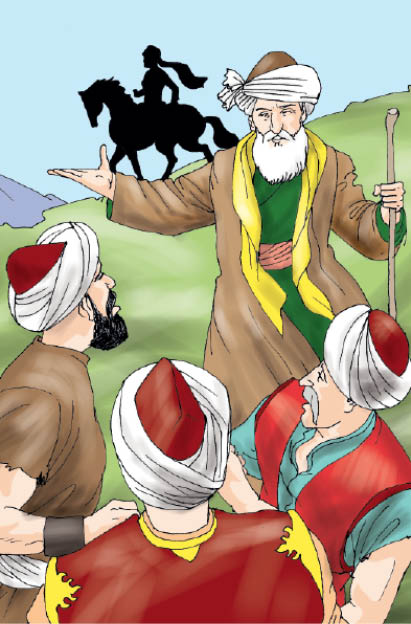

Hurufi ve Rafızîler gizli bir örgüt gibi faaliyette bulunduklarından, mücadelede başarı sağlanacağı umudu fazlaydı ve Hıristiyanların hiçbir zararı yoktu. Sadece casusları kanalıyla Hurufi ve Rafızîlere eleman ve maddi imkân transfer etmek gerekiyordu.
Rumeli fütuhatı sürerken bölgeye gelerek tekke ve zaviyeler kurup cihada büyük katkılar sağlayan gazi dervişlerin kılığına girerek yerleşen Hurufi ve Rafızî dedeleri, yeni Müslüman olan yerli ahali ile temasa geçerek, kendi bozuk itikatlarını yaymaya ve Osmanlı Devleti aleyhine fitne ve fesada başlamışlardı.
Ali Rıza adındaki bir Hurufi dedesi, uzun zamandan beri yeraltı faaliyetleri yürüterek Sultan Murat Han’ın zalim olduğunu, adil olmayan bir kişinin saltanatının geçersiz olduğunu, saltanata onun oğlu Savcı Bey’in layık olduğunu yayarak ipsiz sapsız takımını Savcı Bey etrafında toplanmaya çağırıyordu. Öte yandan da haram işlemeye meyyal olan bu cahil ve fasık güruha eğer Savcı Bey padişah olursa onlara bol miktarda mal, mülk ve arazi vermeyi vaat ediyordu.
Çapulcular Hıristiyanların yerli işbirlikçileriyle birlikte Kete’de toplanmaya başladılar. Müslümanlara ait bağ, bahçe, dükkân ve evlere saldırarak yağmalamaya başladılar. Bu arada Şehzade Savcı Bey’e de haberci göndererek cemaatin bir iş bahanesiyle onu beklediğini haber verdiler.
Savcı Bey bütün olup bitenlerden habersiz davet edildiği yere geldiğinde pusulayı şaşırmış bir çapulcu sürüsüyle karşılaşmıştı. Kalabalık Savcı Bey’i görür görmez İsterük! İsterük! Savcı Bey’i isterük! İstemezük! İstemezük! Sultan Murat’ı istemezük! diye bağırarak genç şehzadeyi omuzlara aldılar. Savcı Bey, hiçbir art niyeti olmadan çapulcuların safında bulmuştu kendini. Yöneten de planlayan da aynı kişilerdi bu süfli, pis tezgâhı. Yağma ve talana uğrayan halk ise babasına karşı isyan ettiğini gördükleri Savcı Bey’i kınıyordu. Hâlbuki istikbal vaat eden genç şehzade Avrupa fütuhatı için planlar yaparken, bir fitnenin içinde bulmuştu kendini. Hepsinden acısı da kendini omuzlara alan isyancılar, yağma ve talana devam ediyorlardı. İsyancıların omzundan ne kadar inmeye çalışsa, bu gafillerden uzaklaşmaya çalışsa da beyhudeydi, boşunaydı...
Tarih onu taht kavgası yapan bir veliaht olarak anacaktı.
Lala Şahin Paşa, isyancıların Kete’yi yağmaladığını haber alır almaz ordusuyla yola koyulmuştu. Sultan Murat Han, Lala Şahin Paşa’ya verdiği fermanda “Lala bu işi tam anlayasın, bizim evladımız bize kılıç mı çeker? Bizim soyumuzdan gelen bir evlat, nizam-ı âleme karşı mı gelir?” diye emretmişti.
Lala Şahin Paşa serseriler topluluğunu Kete Ovası’nda kuşatarak, kılıçtan geçirmeye başladı. Kanları yere dökülmeye başlayan isyancılar, Lala Şahin Paşa’dan aman dileyerek Şehzade Savcı Bey’in oyununa geldiklerini söylemeye başladılar.
Lala Şahin Paşa, Savcı Bey’i yakalayarak sorguya aldı. Ferasetli ve âlim bir devlet adamı olan Lala Şahin Paşa daha ilk sorgusunda, şehzadenin masum ve bütün bu olup bitenlerin dışında olduğunu anlamıştı. Ama onun vücudu artık bu fitnenin sebebi olmuştu bir kez. Bu görüşünü Sultan Murat’a da aynen iletti. Şehzadenin tamamıyla suçsuz ve işlenen suçlardan habersiz olduğunu ama fitnecilerin onu bu isyanda kullandıklarını arz etti.
Sultan Murat Gazi, oğlu Savcı Bey’in suçsuz olduğu için Cenab-ı Hakka şükretti. Bu kutsal davada kendi neslinden bir şehzadenin isyankâr olması onu çok üzerdi. Fakat ortada bir suç vardı. Yağmacı kalabalık, hep bir ağızdan isyanın elebaşı olarak Şehzade Savcı Bey’i gösteriyordu.
Kadı Hüseyin Efendi, sorguladığı Savcı Bey’in tamamen suçsuz olduğuna kanaat getirdiği halde, binlerce isyancının şahitliği ile isyan sorumlusu olarak idamına karar verdi.
Oğul Savcı Bey için verilen karar, imza için baba Sultan Murat’a getirildiğinde, düşünmeden, tereddüt etmeden imzaladı.
Kanunlar karşısında sultan, şehzade ayrımı yoktur.
Karar: İdam... Savcı Bey asılacak...
BİTTİ